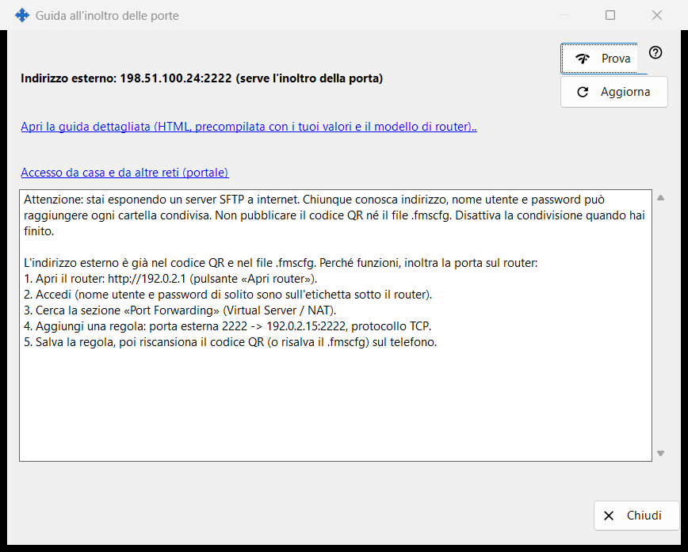
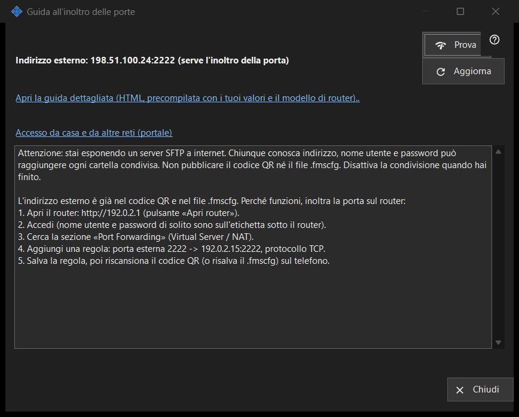

Guida all'inoltro delle porte
Scopo
Aiuta a rendere la condivisione raggiungibile dall'esterno della rete domestica. Mostra l'indirizzo esterno e se la porta è stata aperta automaticamente o richiede l'inoltro sul router, e offre un test e una guida dettagliata. Si apre dal pulsante «Come configurare l'accesso da internet» della finestra principale.


In questo ordine
- Avvia prima la condivisione; altrimenti la finestra ti chiede di farlo.
- Leggi le righe di stato: raggiungibile, dietro CGNAT oppure serve l'inoltro della porta.
- Se serve l'inoltro, apri la guida dettagliata e crea la regola sul router.
- Premi «Prova» per verificare l'indirizzo da questo PC.
- Conferma dal telefono con i dati mobili e il Wi-Fi spento.
Gli elementi
Stato
La finestra rileva l'indirizzo esterno e riporta una di queste voci: «Raggiungibile da internet», «Indirizzo esterno: .. (serve l'inoltro della porta)», «Indirizzo esterno sconosciuto: controlla il router.» oppure «Dietro CGNAT: non raggiungibile dall'esterno.». Quando la porta è stata aperta automaticamente (UPnP) non serve configurare il router, ma solo il telefono con i dati mobili può confermare che funziona. «Aggiorna» ripete il rilevamento.
Router e guide
La riga del router mostra il suo indirizzo, oppure «Rilevamento del router..» mentre lo si cerca. Il collegamento «Apri la guida dettagliata (HTML, precompilata con i tuoi valori e il modello di router)..» apre una guida HTML locale; se non si può aprire, la finestra lo segnala. Il collegamento «Accesso da casa e da altre reti (portale)» apre nel browser la pagina corrispondente del portale della guida.
Test
Verifica l'indirizzo esterno da questo PC e riporta «Server SFTP raggiungibile», «Porta aperta, ma nessuna risposta SFTP», una connessione chiusa (forse il limite di connessioni) oppure nessuna risposta. Non è conclusivo: molti router rifiutano dall'interno una richiesta al proprio indirizzo esterno, perciò la verifica affidabile è il telefono con i dati mobili.
Sicurezza
Aprire SFTP a internet consegna tutte le cartelle condivise a chiunque venga a conoscenza di indirizzo, utente e password. Non pubblicare il codice QR né il file .fmscfg e disattiva la condivisione quando hai finito. «Chiudi» esce dalla finestra.
Impostazioni del gestore · Impostazioni condivisione SFTP · Impostazioni server di scambio